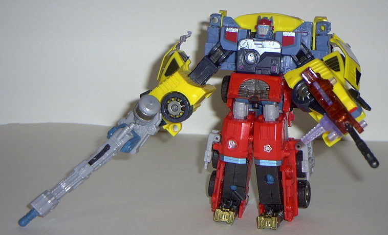
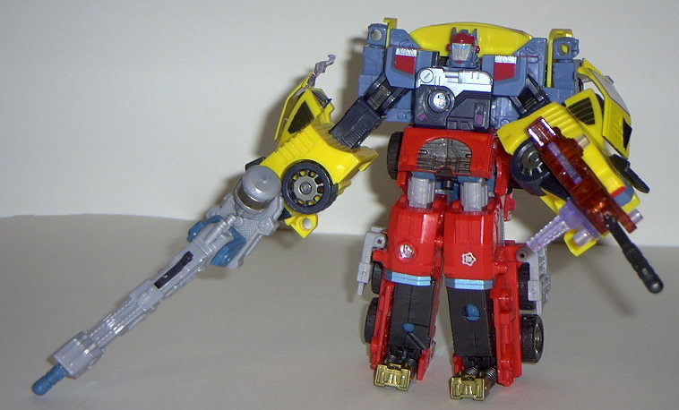

Inferno
(Energon)
Inferno
(Energon)
Allegiance
: Autobot
Size
: Deluxe
Difficulty of Transformation
: Easy
Difficulty of Powerlinx Transformation
:
Easy
Color Scheme
: Red, black, light
milky gray, dull metallic bronze, flat tealish blue, and some transparent
dark blue, yellow-orange, dull metallic gold, shiny metallic teal, and
dark metallic gunmetal gray
Powerlinx ports
: 2
Rating
: 6.5
Vehicle mode is a futuristic
fire truck. This mode, although not spectacular, is fairly good. There's
plenty of mold and paint detailing- in fact, if there were any more, I'd
consider it too crowded. The front of the truck has some nice see-through
windows (even though there's nothing like seats or anything inside), and
the "fire ladder" is actually a missile launcher. Turn the gold-striped
knob near the back of the fire truck and the ladder turns with it- kinda
pointless since it's right next to it, but eh. Of course, the ladder can
move up and down as well. He also has a Powerlinx port on each side of
the truck for some Minicon-linkin' action, and some nice clear plastic
sirens near the front of the vehicle. However, my main catch about this
mode is that the robot head is just... there. I mean, there's a piece you
fold in front of the face to conceal it a little, but it's still very plainly
the robot head sticking out of the top of the vehicle. It's very odd-looking,
and simply shouldn't be there. The pieces connecting the shoulders to the
main robot mode body are also easily seem in this mode, as are the tips
of the feet on the backside. Taken together, these robot extras bring the
mode down from "really good" to just "satisfactory".
I really am not fond
of Inferno's robot mode. I mean, both through the similar transformation
and the large broad chest, it's obvious that he has some homages to
G1
Inferno
, but he looks just plain bad. My main problem is that his chest
is at such an angle to his head that you actually have to make it look
like he's leaning forward in order to get his head at a satisfactory level
above it. And that's actually how it's SUPPOSED to be, and it just looks
stupid. His face is also a bit too long and simian-like, and the long plate
"ears" that stick out behind it look odd as well. In addition, the head
tends to disconnect from the chest a bit easier than I'd like. His legs
also have no forward movement (they're blocked by his slanting chest),
but at least he has nice articulation everywhere else- he can move at the
head, knees, shoulders at two points, and the elbows at two points. His
large gun hanging off one arm also looks pretty cool. His arms are a little
on the chunky side, but I can at least live with that. Overall, though,
it creates a very bad impression. Inferno's silver Powerlinx symbol is
on the top of his right shoulder, while his Autobot spark crystal is on
the top of his left.
 

Inferno's Powerlinx
modes also aren't anything much. As the top half of the Powerlinx robot,
Inferno has these huge... things... jutting out from the top of his back.
I guess you could say they're guns, but it just seems to me a pretty cheap
way of making the legs a more integral part of the robot mode. The rest
of this mode looks decent enough, although the head does tend to hover
a bit over the chest.
As a bottom half, Inferno
tends to stay together better and have less extras. But because of how
thick the legs are no, he has absolutely no movement as this half. So although
it looks decent enough, if you want actual movement, go with another Autobot
as the bottom half. His robot head, situated between the two legs as it
is, also tends to pry the individual legs apart a little more than I'd
like.
Inferno is a pretty lackluster
Autobot, not really excelling in any of his modes, especially his robot
mode. His vehicle mode is alright, but even it has some problems. Not recommended.
Inferno Bio
:
MOTTO: "Always look before you leap."
Inferno is a true Autobot, always looking
out for the safety and well being of those around him. In vehicle mode,
he is a powerful firetruck capable of heroic, and often dangerous, search
and rescue missions. In robot mode, he is a skilled targetmaster and sniper.
Inferno thinks before he acts, aware of the consequences of his actions.
He is able to powerlinx with Hot Shot and always provides a well thought-out
approach before battle.
Strength: 8.0
Intelligence: 7.0
Speed: 8.0
Endurance: 10.0
Rank: 8.0
Courage: 10.0
Fireblast: 10.0
Skill: 10.0
Review by Beastbot
Back to Transformers:
Energon Index